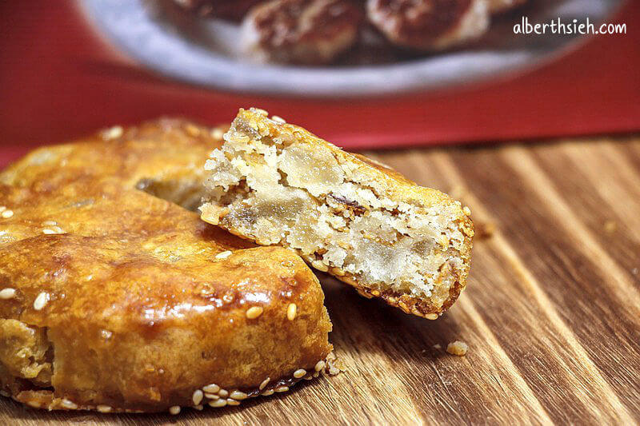
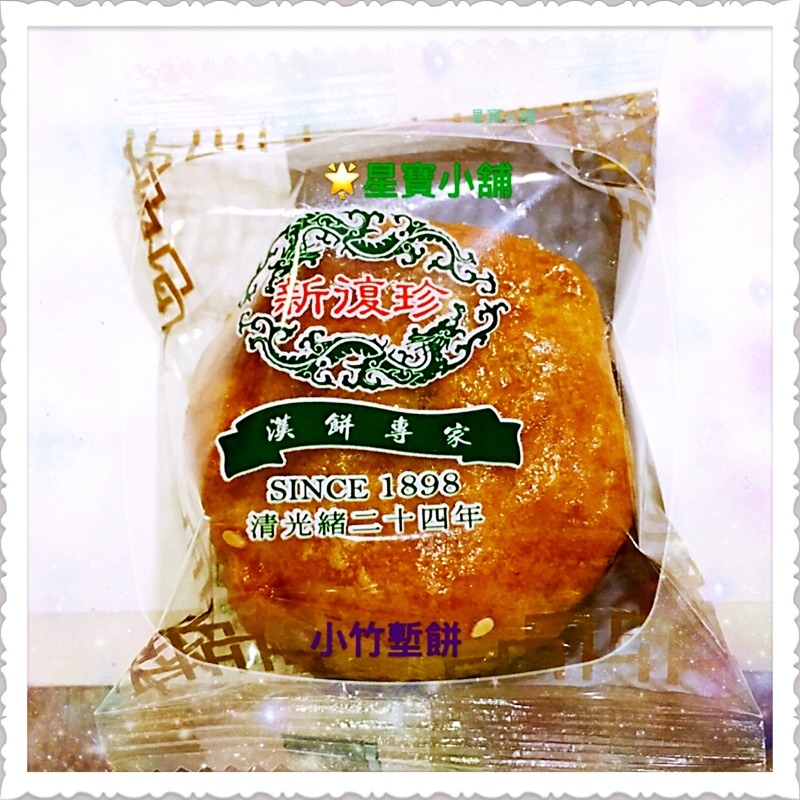
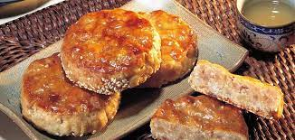

1.別稱 竹塹餅又稱為新竹餅、高麗餅或糕皮餅 2..由來 新復珍糕餅店位於城隍廟旁， 從清光緒二十四年創立至今，已經是一間一百二十一年歷史的老店了。 新復珍餅舖創立於1898年(光緒24年)，最開始創始人是在城隍廟附近賣粽子，但因為粽子會壞掉，保存不易，所以就將粽子的餡料包在餅內， 原來是把肉粽的紅蔥頭、肥豬肉混和冬瓜糖混製而成，這就是竹塹餅的由來。  糕餅業是新竹滿出名的產業，在《新竹市鄉土史料》中，蔡翼謀先生也有提到：「本地昔日傳統食品點心也糕餅類為主， 尤其是錦珍香、金瑞珍、新復珍餅店所製造、販賣的，色、香、味俱全，令人垂涎三尺。」 新復珍剛開始有店面時，只是一棟兩層樓的矮房， 那時，新復珍其實是負責代理一些日本進口的商品，如明智、森永等。在四十年前左右時，才蓋了這棟大樓，慢慢開始賣一些糕餅， 因為以前的新竹沒有什麼麵包店或蛋糕店， 所以新復珍除了現在的漢餅之外，也有賣包子、麵包、蛋糕等等，但後來因為越來越多麵包店陸續開店，新復珍便開始縮減，捨去一些旁支，專做漢餅。 在民國九十幾年（受訪記不清楚時間）時，新復珍曾面臨倒閉的的危機，因為沒有人願意接手， 畢竟這種傳統產業很辛苦，後來是現在的老闆因為從小在新竹由阿祖帶大，捨不得這家店消失，所以辭去了台北的工作回來接手， 新復珍才得以繼續開店。 現在他們也會在一些節慶時做些水潤餅給城隍廟，讓他們分送給信徒，可以說新復珍和城隍廟之間的連結滿強的。 3.發展 他們（二次世界大戰）的經營其實並沒有太大的受到戰爭的影響，因為他們在戰時主要是代理日本的商品，老一輩的也都是受日式教育，可能跟日本人關係也不錯，所以沒有受到太大的影響。 4.新復珍 新復珍商行民國前14年創立，創辦人吳張換女士當時僅20歲，並在城隍廟前設攤賣肉粽。 吳張換後來想要增加糕餅的口感，便嘗試將肉粽餡料揉進糕餅內，就成了鹹甜口味交織的竹塹餅，也可以說竹塹餅的前身是一顆肉粽轉變而來的， 這種兼具鬆脆、柔軟的肉餅，咬下的瞬間口腔內顯現各式特殊口感，鹹甜的口感好味道，就是伴隨著新竹人長大的味覺記憶。 現今新復珍第4代總經理吳紘一表示，他雖是餅店第4代，但已接班25年，強調一定會維持廠房製程的整潔，維持百年餅店的招牌， 因為這是曾祖母留下的珍貴資產，他也會努力培養接班人，繼續傳承竹塹餅的好味道。 5.材料 (1)表皮食材:中筋麵粉、豬油、糖粉、全蛋、蛋黃（塗抹表面）  (2)內餡食材:肥豬肉、冬瓜糖、糖粉、豬油、麥芽糖、熟麵粉、奶粉、全蛋、白芝麻、油蔥 
來源(1) 來源(2)(請用chrome打開)